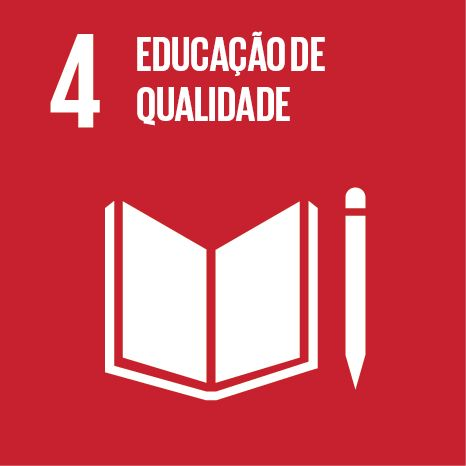

Objetivos de Desenvolvimento Sustentável
O que são as ODS?
As ODS são metas globais estabelecidas pela ONU para promover o desenvolvimento sustentável até 2030, abrangendo educação, cidades, consumo e ação climática.
ODS e o Crisoverde Digital
O Crisoverde Digital está alinhado aos ODS ao incentivar educação ambiental, conscientização e desenvolvimento de hábitos sustentáveis nas comunidades.

Educação de Qualidade
Promover educação inclusiva, equitativa e de qualidade para todos.
O Crisoverde Digital promove educação ambiental acessível e gamificada para toda a comunidade.

Cidades e Comunidades Sustentáveis
Tornar cidades e comunidades mais inclusivas, seguras e sustentáveis.
Contribuímos para a gestão adequada de resíduos e limpeza urbana em Crisópolis.

Consumo e Produção Responsáveis
Garantir padrões sustentáveis de consumo e produção.
Nossos jogos incentivam diretamente a reciclagem e o reaproveitamento de materiais.

Ação Contra a Mudança Climática
Tomar medidas urgentes para combater as mudanças climáticas.
Educando para a ação climática local como forma de impacto global real.